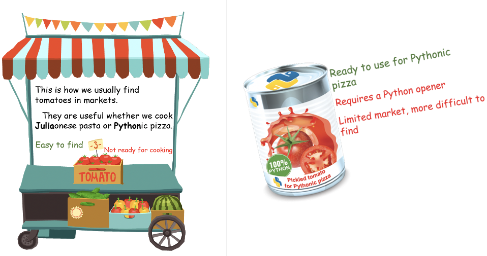
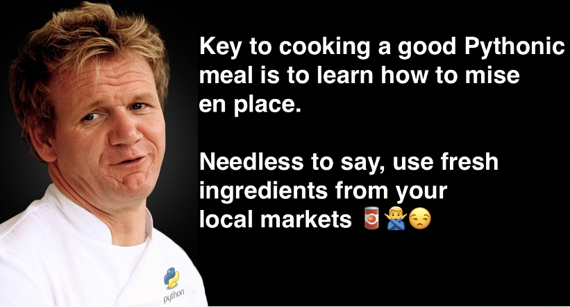
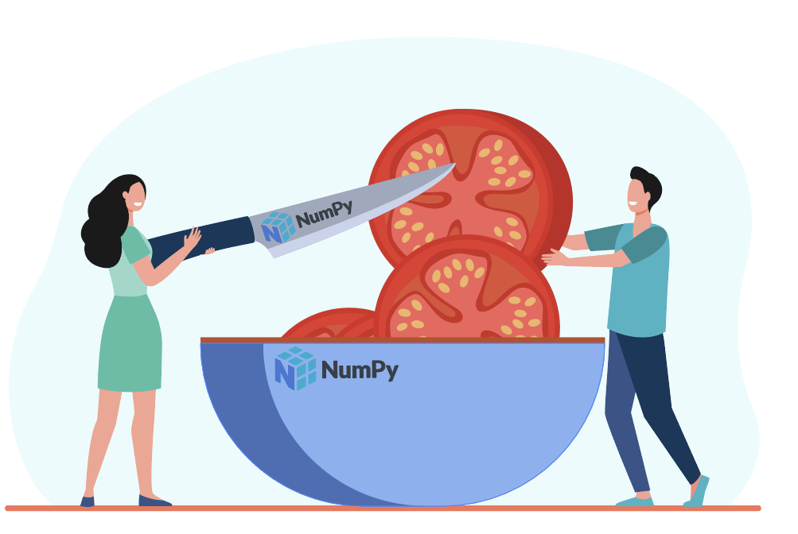
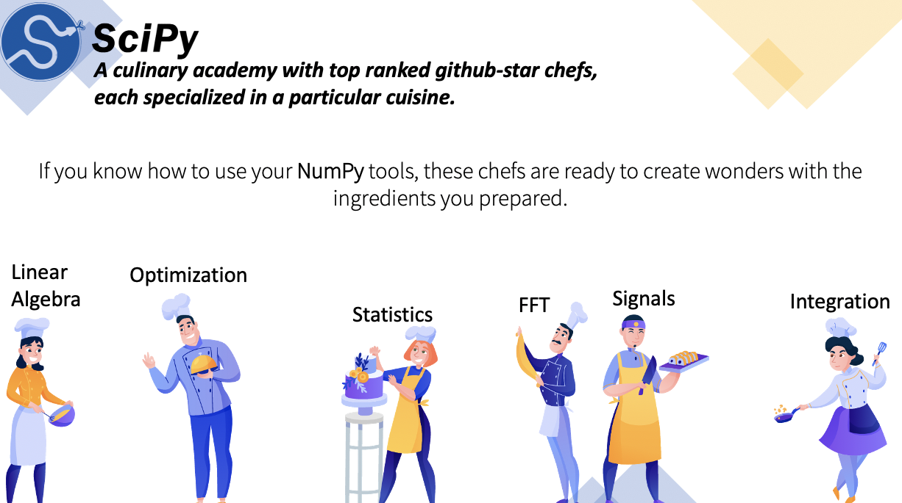
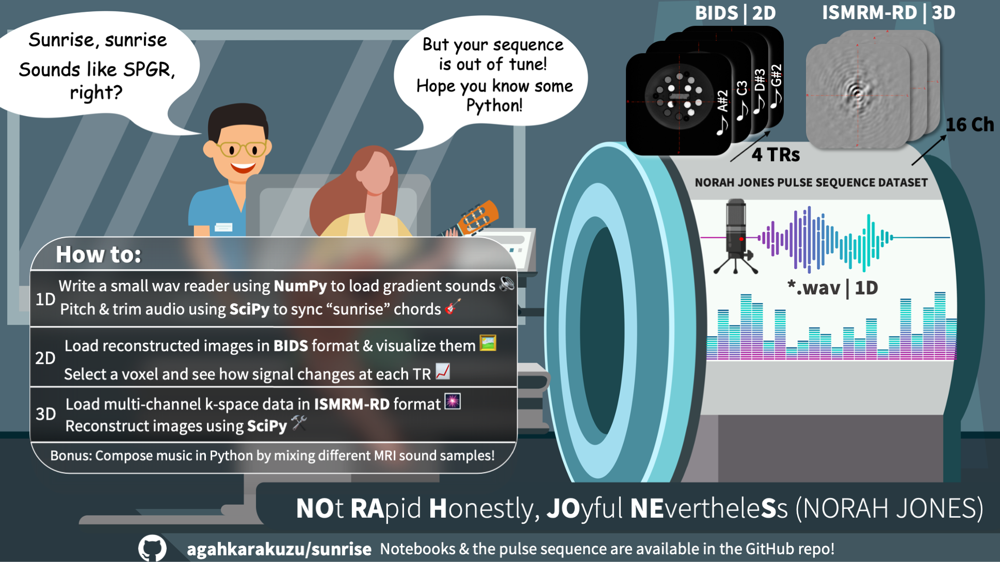

Introduction¶
From acoustic dissonance to magnetic resonance
This interactive book will teach you NumPy and SciPy in the context of signal processing. The main exercise is to make some magnetic music by harmoniously mixing MRI acoustic noise with guitar melodies and vocal tracks. I have a special introduction to motivate you:
ISMRM Innovation in MRI Education
🥈 This course is the silver award winner!
Listen, interact and re-run
All the interactive content (audio and interactive figures) has been embedded in this Jupyter Book, so you can use interactive features without running a single line of code.
Why?¶
This would have been a sunrise session if it were a physical meeting.
—Dan and Miki
I prepared this NumPy and SciPy course for a software engineering educational session at ISMRM 2021 Annual Virtual meeting. There are thousands of great resources to learn about these fundamental Python modules online, but this course is special because:
👨🎤 It is artfully tailored for MRI scientists. You make music using MRI sounds as you learn Python.
🌅 Despite that the conference is virtual, it is still about sunrise no matter where you are
🧲 It comes with a publicly available pulse sequence
💽 It teaches scientific computing with Python using community data standards: ISMRM-RD and BIDS
🎚 It includes interactive visualizations
It is equipped to ensure reproducibility
Scientific computing with a cooking analogy¶
All the notebooks are presented in the context of a typical image processing workflow, with an analogy to cooking!
An overarching theme
Use the tabs below to find out about the culinary skills you will obtain in this course to cook a scientifically nutritious Pythonic dinner!
Know your file formats and data standards
Most high-level programming languages have a native way for packing and unpacking their own objects, such as MATLAB (*.mat), Python (*.pkl), Julia (*.jld) and such.
But when we go to community markets for data shopping to cook a nutritious meal, we usually don’t find ingredients available in such formats.

{kind=link}

{kind=link}
Fresh MRI ingredients
ISMRM-RD for k-space data and BIDS for reconstructed images. For dealing with audio processing, we will be working with 16-bit .wav files, which is frequently used by professional music studios.
Put everything in place with NumPy
Depending on our research question or application, we often need to dice and slice our data in different ways. `NumPy` is the brand of our chef's knife and all the utensils to put everything in place.

{kind=link}
Let professionals cook for you!
You can imagineSciPy (or any other Python package) as a culinary academy of Michelin Star Chefs, who are willing to cook your meal for free, if you did the preparation.

{kind=link}
Everything tastes better when you share.
IMHO, sharing our MRI processing recipe with others is a requirement rather than a choice.

What you’ll learn¶
{kind=link}
1D Data 🎼¶
Samples from different MRI sequences (including NORAH JONES) and some guitar melodies to compose magnetic melodies in Python. Files are in *.wav format, storing audio sampled at 44.1kHz sampling frequency (or framerate) 💿. Respecting Nyquist sampling theorem, this framerate allows us to digitize analog sound at the highest frequency audiable to human ear (20kHz).
There are so many Python modules that can load a
*.wavin a single line, such asscipy,librosa,soundfile,scikitsetc.
For demonstration, we will use Python’s standard wave library and convert data from byte array to numpy array.
2D Data 🌅¶
Images acquired using the NORAH JONES sequence at 4 TRs. Each image is 100x100, organized in Brain Imaging Data Structure (BIDS). We will use pyBIDS to query and load this data.
3D Data 🎆¶
K-space data acquired using the NORAH JONES sequence at 4 TRs. Each file contains 100x100x1x16 data (16 receive channels), organized in ISMRM Raw Data - ISMRM-RD format. We will use ismrmd-python to load this data.